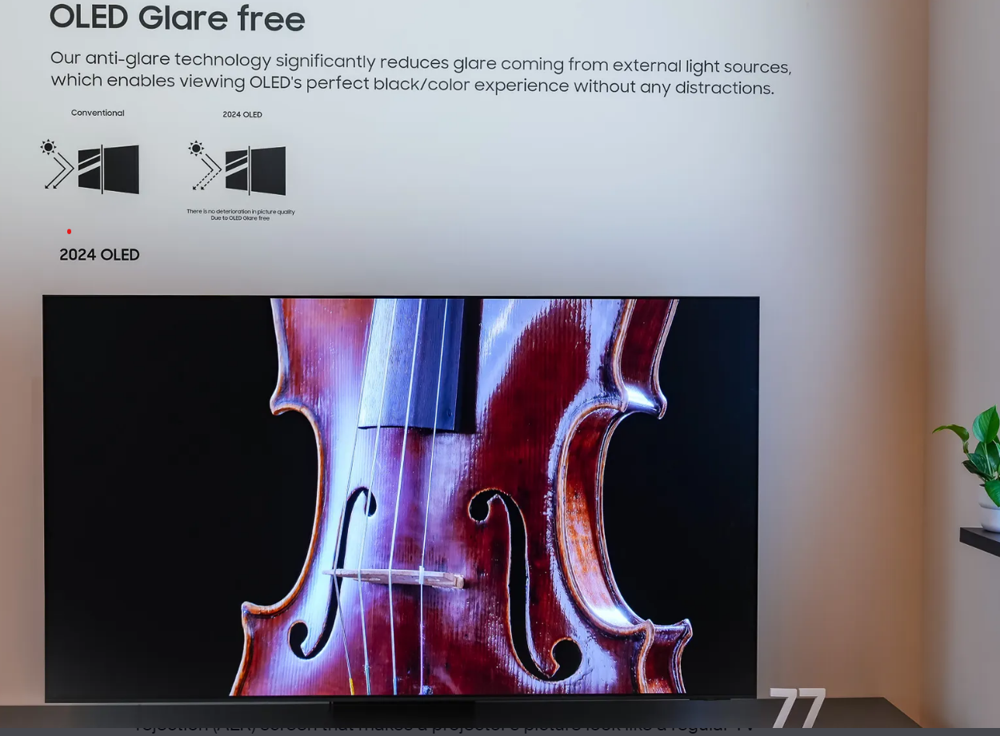
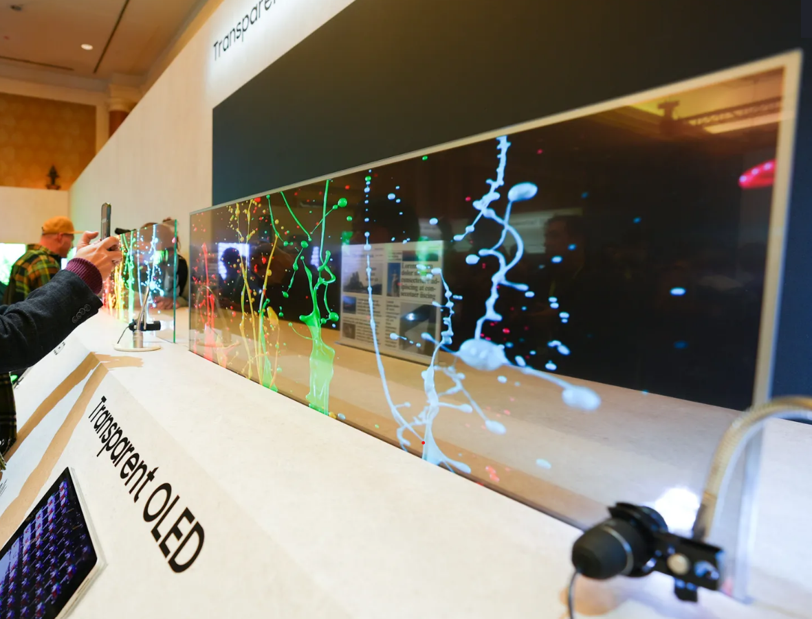
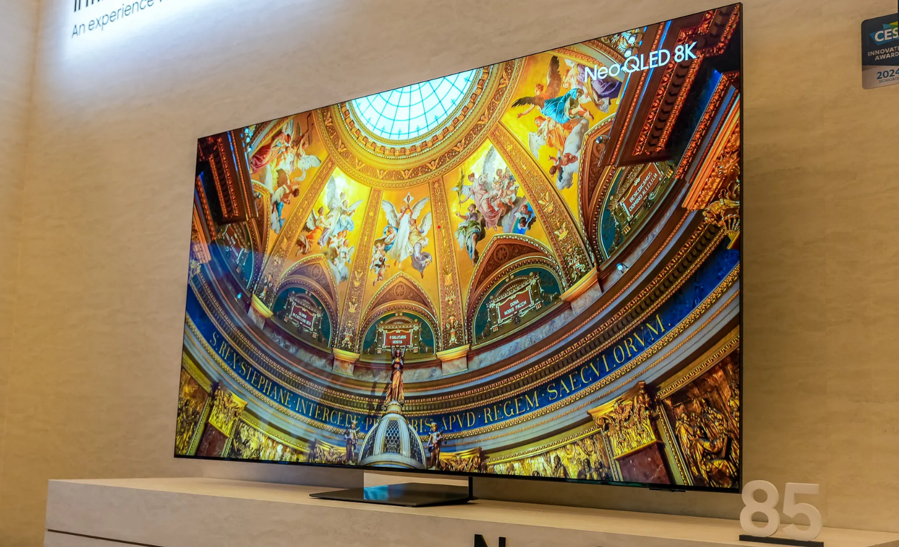

Welcome to ACES Flag!!!!!!!
Instead of being a giant black mirror like most of today's TVs, the matte finish on the S95D disperses and softens the light from lamps and windows into a minimal glow that's overpowered by the brightness of Samsung's OLED display.
One of the simplest 2024 upgrades was also the most impressive to see in person. Samsung's new "Glare Free OLED" that it's bringing to the top-of-the-line S95D OLED makes this TV the best one to look at in the entire Samsung lineup. When you combine the beautiful contrast and vibrant color of Samsung's QD-OLED technology with the new matte finish, it produces a TV that is a pleasure to watch from any angle and in the brightest or darkest rooms.
Inspect a little bit more

